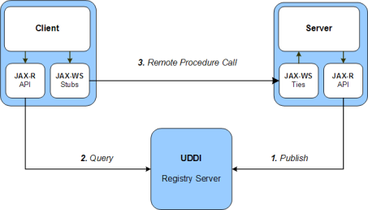

A JAX-R (Java API for XML Registries) é uma biblioteca Java que permite o acesso a registos de serviços, como o UDDI.
As aplicações clientes usam uma biblioteca para efectuarem as suas publicações, eliminações e pesquisas.
O JAX-R pode permitir a invocação de Web Services, cuja localização apenas é determinada em tempo de execução.

O servidor usa JAX-R para publicar (1) a sua localização no registo UDDI.
A seguir, o cliente usa JAX-R para pesquisar (2) no registo UDDI a localização do servidor.
Finalmente, conhecido o URL do servidor, o cliente efectua a chamada remota
de procedimento usando Web Services (3).
Os objectos da biblioteca JAX-R (pacote javax.xml.registry.infomodel) implementam um esquema de dados muito próximo do UDDI. O mapeamento de um para outro é quase directo, só mudam alguns nomes.
As principais classes da biblioteca são:
Para questões de maior detalhe, uma boa referência é o: manual sobre o uso JAX-R para acesso a UDDI.
De seguida damos uma explicação muito resumida sobre como programar com esta biblioteca.
... ConnectionFactory connFactory = ConnectionFactory.newInstance(); ... // Para uma correcta ligação ao UDDI registry, é necessário definir vários // parâmetros (properties), desde a versão do UDDI aos URLs de publicação e pesquisa do registry Properties props = new Properties(); // Localização do ficheiro de configuração da ligação, // que deve estar na directoria WEB-INF/classes do .war props.setProperty("scout.juddi.client.config.file", "uddi.xml"); // URL para pesquisas ao UDDI registry props.setProperty("javax.xml.registry.queryManagerURL", "http://localhost:9090/juddiv3/services/inquiry"); // URL para publicar dados no UDDI registry props.setProperty("javax.xml.registry.lifeCycleManagerURL", "http://localhost:9090/juddiv3/services/publish"); // URL do gestor de segurança do UDDI registry props.setProperty("javax.xml.registry.securityManagerURL", "http://localhost:9090/juddiv3/services/security"); // Versão UDDI que o registry usa props.setProperty("scout.proxy.uddiVersion", "3.0"); // Protocolo de transporte usado para invocações ao UDDI registry props.setProperty("scout.proxy.transportClass", "org.apache.juddi.v3.client.transport.JAXWSTransport"); connFactory.setProperties(props); // Finalmente, estabelece a ligação ao UDDI registry Connection connection = connFactory.createConnection(); // Define credenciais de autenticação a usar para interacção com o UDDI registry // Nota: o jUDDI fornecido para utilização no projecto está configurado // para aceitar qualquer par username/password; no mundo real, não é assim PasswordAuthentication passwdAuth = new PasswordAuthentication("username", "password".toCharArray()); Setcreds = new HashSet (); creds.add(passwdAuth); connection.setCredentials(creds); // Obter objecto RegistryService RegistryService rs = connection.getRegistryService(); // Obter objecto QueryManager da JAXR Business API // (caso se pretenda fazer pesquisas) BusinessQueryManager businessQueryManager = rs.getBusinessQueryManager(); // Obter objecto BusinessLifeCycleManager da JAXR Business API // (caso se pretenda registar/alterar informação no UDDI registry) BusinessLifeCycleManager businessLifeCycleManager = rs.getBusinessLifeCycleManager();
// Definir critério de pesquisa por nome Collection findQualifiers = new ArrayList(); findQualifiers.add(FindQualifier.SORT_BY_NAME_DESC); // Neste exemplo, pretendemos pesquisar as organizações cujo nome inclua "Fly" Collection namePatterns = new ArrayList(); namePatterns.add("%Fly%"); // Efectua a pesquisa BulkResponse r = bqm.findOrganizations(findQualifiers, namePatterns, null, null, null, null); Collectionorgs = r.getCollection(); for (Organization o : orgs) { // Aqui posso consultar cada organização encontrada (e os respectivos serviços) // Posso também alterar/criar elementos (por exemplo, serviços) e // registar as alterações usando o businessLifeCycleManager }
// Cria nova Organização (em memória, ainda não registada no UDDI) Organization org = businessLifeCycleManager.createOrganization("Fly Away Airline Travel Agents"); // Cria serviço (em memória) Service service = businessLifeCycleManager.createService("Fly Away Airline Reservation Service"); service.setDescription(businessLifeCycleManager.createInternationalString("Flight Reservation Service")); // Cria serviceBinding ServiceBinding serviceBinding = businessLifeCycleManager.createServiceBinding(); serviceBinding.setDescription(businessLifeCycleManager. createInternationalString("Information for airline reservation service access")); serviceBinding.setValidateURI(false); serviceBinding.setAccessURI("http://www.airlinetravel.com:8080/airlineService/service"); // Adiciona o serviceBinding ao serviço service.addServiceBinding(serviceBinding); // Adiciona o serviço à organização org.addService(service); Collectionorgs = new ArrayList (); orgs.add(org); // Finalmente, regista a organização e serviço no UDDI registry BulkResponse br = businessLifeCycleManager.saveOrganizations(orgs); if (br.getStatus() == JAXRResponse.STATUS_SUCCESS) { System.out.println("Successfully saved the organization to the registry provider."); } else { System.out.println("Error when saving the organization to the registry provider."); }
Collectionkeys = new ArrayList (); keys.add(organizationToDelete.getKey()); businessLifeCycleManager.deleteOrganizations(keys);
© Docentes de Computação Distribuída, Dep. Eng. Informática, Universidade Lusófona